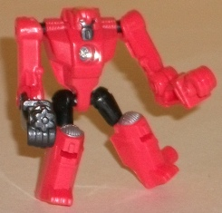
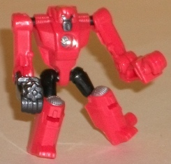
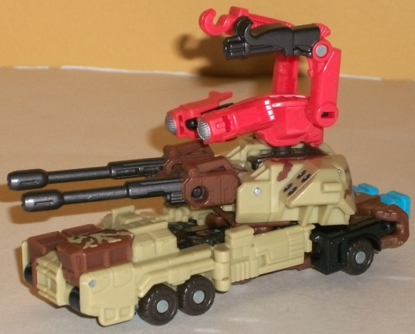
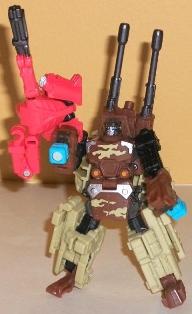
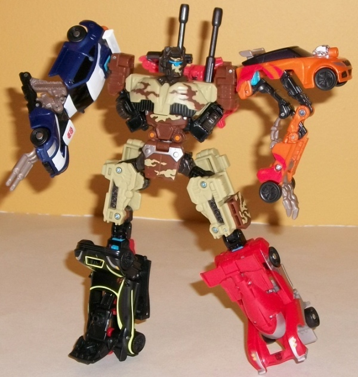

Beacon
Beacon

Allegiance : Minicon
Difficulty of Transformations : Very Easy
Color Scheme : Light flat red and some black, dark metallic gunmetal gray, and silver
Individual Rating : 3.8
Steelshot
w/ Beacon
(NOTE: Because this set is composed of repaints,
this is not a full-blown review. This mainly covers any changes made to
the set and the color scheme, and merely compares it to the original versions
of these molds. For a review on Backwind, the mold used for Beacon, go
here
.
For a review on Bombshock, the mold used for Steelshot, go
here
.)
Beacon

Allegiance
: Minicon
Difficulty of Transformations
: Very
Easy
Color Scheme
: Light flat red and
some black, dark metallic gunmetal gray, and silver
Individual Rating
: 3.8
Beacon here is a real
oddity-- out of all the Power Core Minicons, he's the only one that's not
mainly transparent. Instead he's a rather bland, light shade of red. It
makes Beacon look rather plain. If the red had more paint apps, this might
have been an okay tradeoff, but it doesn't-- Beacon has just as many paint
apps as his predecessor Backwind. His face and machine gun-arm are painted
a nice shade of dark metallic gunmetal gray-- and along with his black
upper legs, it serves as a nice enough contrast color to the light red.
The silver headlights/kneecaps, not so much, since they're both rather
light colors.
No mold changes have
been made to Beacon.
Beacon is a real head-scratcher,
with an unnecessarily bland and plain color scheme with few paint apps
(though his color scheme itself isn't outright BAD). The first use of this
mold as Backwind looks considerably better. Beacon also looks really odd
when connected with Steelshot, which is another big strike against him.
 Steelshot
Steelshot



Allegiance
: Autobot
Difficulty of Vehicle/Robot Transformation:
Easy
Difficulty of Torso Transformation
:
Medium
Color Scheme
: Moderately dark milky
brown, light pasty tan, and some black, dark charcoal gray, silver, light
sky blue, dark metallic gunmetal gray, light safety orange, and metallic
bronze
Individual Rating
: 8.0
Steelshot has a "desert
camo"-style color scheme, with light tan and dark brown being the main
colors, both of which contrast against each other quite well. The black
and dark charcoal gray (which looks like dirty/sandy black, and thus fits
the toy quite well) serve as decent enough dark neutral colors to bring
the whole scheme together. What stands out the most among Steelshot's color
scheme (and paint apps) are the bits of camo-style deco added in here and
there, namely dark brown camo paint apps on his light tan plastic and light
tan camo paint apps on his dark brown plastic. None of the camo paint apps
are that big-- there just isn't any large space on the toy that gives you
enough room for big decorative patterns or anything-- but it does help
bring a bit more uniqueness to the toy and breaks up the colors a bit more.
It looks particularly good on the robot mode chest and waist and--combined
with a couple of detailing colors like silver and light orange-- really
helps make that part of the toy visually pop. However, I don't know what
the people behind this color scheme were thinking when they gave Steelshot's
torso mode's head some weird camo paint apps on the face instead of painting
the actual faceplate. It looks really weird and diminishes what is otherwise
the best mode of this toy.
No mold changes have
been made to Steelshot.
Steelshot has a more
varied and lighter paint job than his predecessor Bombshock, and it works
quite well for an Autobot (even if the look of the torso mode doesn't).
Generally I think the color scheme beats out Bombshock's ever-so-slightly,
but the camo paint on the torso mode's face is rather cringeworthy, so
overall I think he's on par with Bombshock in the color department. If
you're deciding which one to get, I'd go with Bombshock as he comes with
cool drone limbs. This guy comes with an oddly-colored and ill-fitting
Minicon instead.
Reviews by Beastbot